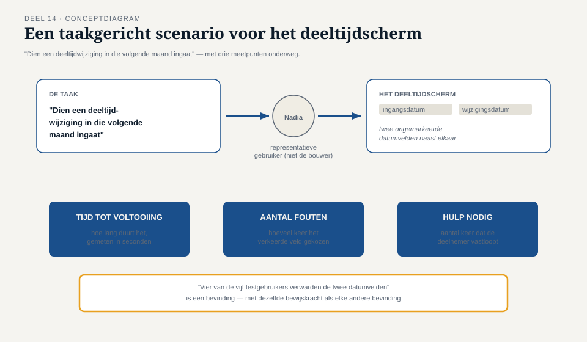

Deel 14 — Kwaliteitskenmerken I
Reader · Ductus-cursus Testen en Kwaliteitsborging · niveau 2 (professional) · deel 14 van 30
Functionele geschiktheid, bruikbaarheid en toegankelijkheid — de eerste drie van de acht ISO 25010-kenmerken uit deel 12, hier in diepte.
Leerdoelen
Na dit deel kun je:
- functionele geschiktheid nauwkeurig afbakenen en onderscheiden van de andere kenmerken;
- bruikbaarheid systematisch testen met concrete criteria in plaats van een smaakoordeel;
- toegankelijkheid toetsen aan herkenbare, toetsbare criteria;
- beargumenteren waarom "het werkt formeel correct" en "het is bruikbaar" twee verschillende beweringen zijn;
- een testaanpak voor bruikbaarheid en toegankelijkheid opnemen in de teststrategiematrix uit deel 12.
Studielast: één dagdeel klassikaal, circa drie uur zelfstudie.
1. Formeel juist, onbegrijpelijk
Nadia El Amrani, die de werkgeverskant vertegenwoordigt in het programma, testte een vroege versie van het nieuwe portaalscherm voor deeltijdwijzigingen. Functioneel klopte alles: de juiste velden, de juiste validaties, het juiste resultaat. Zij kon de wijziging niet succesvol invoeren — niet omdat het systeem een fout had, maar omdat zij niet begreep welk veld bij "ingangsdatum" hoorde en welk bij "wijzigingsdatum" (twee velden die het ontwikkelteam functioneel correct, maar zonder enige toelichting naast elkaar had gezet).
Dit incident illustreert precies waarom kwaliteitskenmerken als aparte, gelijkwaardige categorieën bestaan: niveau 1 sprak bijna uitsluitend over functionele geschiktheid, alsof "het systeem doet het juiste" hetzelfde is als "het systeem is goed". Dit deel laat zien dat dat niet zo is.
2. Functionele geschiktheid — afbakening
Functionele geschiktheid omvat: volledigheid (zijn alle gespecificeerde functies aanwezig?), correctheid (geven ze het juiste resultaat — het hoofdonderwerp van heel niveau 1), en passendheid (helpen de functies daadwerkelijk bij het bereiken van het gebruikersdoel, niet alleen technisch correct maar functioneel zinvol ingericht).
Dat laatste — passendheid — is waar het scherm van Nadia faalde: de functie was er, en werkte correct, maar was niet zo ingericht dat zij het gebruikersdoel (een deeltijdwijziging succesvol doorgeven) daadwerkelijk ondersteunde.
3. Bruikbaarheid systematisch testen
3.1 Vier deelaspecten
- Herkenbaarheid van geschiktheid — kan een gebruiker in één oogopslag inschatten of dit scherm doet wat hij nodig heeft?
- Leerbaarheid — hoeveel moeite kost het een nieuwe gebruiker om het systeem te leren gebruiken?
- Bedienbaarheid — hoeveel stappen, hoeveel foutgevoeligheid bij normaal gebruik?
- Foutbescherming — voorkomt het scherm gebruikersfouten, of maakt het ze juist waarschijnlijker (zoals de twee ongemarkeerde datumvelden)?
3.2 Van smaak naar criterium
Bruikbaarheid wordt vaak als "subjectief" afgedaan — een reden om het over te slaan. Dat hoeft niet: bruikbaarheid is met dezelfde systematiek als niveau 1 toetsbaar te maken.
- Taakgerichte scenario's: laat een representatieve gebruiker (niet de bouwer) een concrete taak uitvoeren ("dien een deeltijdwijziging in die volgende maand ingaat") en meet: lukt het, hoe lang duurt het, hoeveel fouten worden gemaakt onderweg?
- Heuristische evaluatie: een vaste checklist (bijvoorbeeld: is systeemstatus altijd zichtbaar? zijn foutmeldingen begrijpelijk en actiegericht? is terminologie consistent?) systematisch langslopen — vergelijkbaar met error guessing (niveau 1, deel 6) maar toegespitst op bruikbaarheid.

Kernzin — "Ik vind dit scherm onduidelijk" is een mening. "Vier van de vijf testgebruikers verwarden de twee datumvelden" is een bevinding, met dezelfde bewijskracht als elke andere bevinding uit niveau 1, deel 8.
4. Toegankelijkheid
4.1 Waarom dit geen aparte doelgroep is, maar een kwaliteitskenmerk
Toegankelijkheid wordt vaak behandeld als iets dat "ook nog" moet, voor een beperkte groep gebruikers. In werkelijkheid is toegankelijkheid een structureel kwaliteitskenmerk: een scherm dat toegankelijk is ontworpen (voldoende contrast, correcte labels voor schermlezers, bediening zonder muis mogelijk) is vrijwel altijd ook beter bruikbaar voor iedereen — bijvoorbeeld voor een werkgeversmedewerker die het portaal op een klein scherm of onder tijdsdruk gebruikt.
4.2 Toetsbare criteria
- Contrast tussen tekst en achtergrond boven een minimale ratio.
- Elk formulierveld heeft een programmatisch gekoppeld label (niet alleen visueel naast het veld).
- Volledige bediening mogelijk met alleen een toetsenbord.
- Foutmeldingen zijn niet alleen kleurgebaseerd (rood) maar ook tekstueel en programmatisch aangeduid.
Deze criteria zijn, net als de black-boxtechnieken uit niveau 1, systematisch te testen — met specifieke gereedschap (schermlezer-simulatie, contrastmeters) én met menselijke beoordeling, dezelfde combinatie als bij statisch testen (niveau 1, deel 4): gereedschap vindt structuur, mensen vinden betekenis.
5. In de teststrategiematrix
Terug naar deel 12: bruikbaarheid en toegankelijkheid krijgen niet overal dezelfde diepgang. Voor het portaalscherm (veelgebruikt, door honderden werkgeversmedewerkers met wisselende ervaring) is intensieve aandacht verantwoord. Voor een intern rapportagescherm, gebruikt door twee ervaren analisten, volstaat een lichte toets.
6. TMAP-lens
Hoe heet dit daar. Bruikbaarheid en toegankelijkheid vallen in TMAP onder dezelfde VOICE-waarde-toets als elk ander kenmerk: levert dit scherm de waarde (een succesvol ingediende mutatie) op, of niet? Een onbruikbaar scherm faalt op Waarde, ongeacht of het functioneel correct is.
Waar het werkelijk anders is. TMAP moedigt sterker aan om bruikbaarheidstesten vroeg en informeel te doen — een korte sessie met een echte werkgeversmedewerker tijdens de sprint, in plaats van een geformaliseerd usability-lab aan het eind. Dit is shift-left (niveau 1, deel 3) toegepast op een kenmerk dat vaak pas laat wordt getest.
Kernbegrippen
functionele geschiktheid (volledigheid, correctheid, passendheid) · bruikbaarheid (herkenbaarheid, leerbaarheid, bedienbaarheid, foutbescherming) · taakgericht scenario · heuristische evaluatie · toegankelijkheid · toetsbare toegankelijkheidscriteria
Samenvatting in vijf zinnen
- Functioneel correct en bruikbaar zijn twee verschillende beweringen — Nadia's scherm bewees het eerste zonder het tweede.
- Bruikbaarheid is met dezelfde systematiek te toetsen als elk ander kenmerk: taakgerichte scenario's en heuristische evaluatie maken een mening tot een bevinding.
- Toegankelijkheid is geen aparte doelgroep maar een structureel kwaliteitskenmerk dat de bruikbaarheid voor iedereen verbetert.
- Toegankelijkheidscriteria zijn zowel met gereedschap als met menselijke beoordeling te toetsen — dezelfde combinatie als bij statisch testen.
- De diepgang van bruikbaarheids- en toegankelijkheidstesten volgt, net als elk ander kenmerk, uit de teststrategiematrix — niet uit een vast recept.